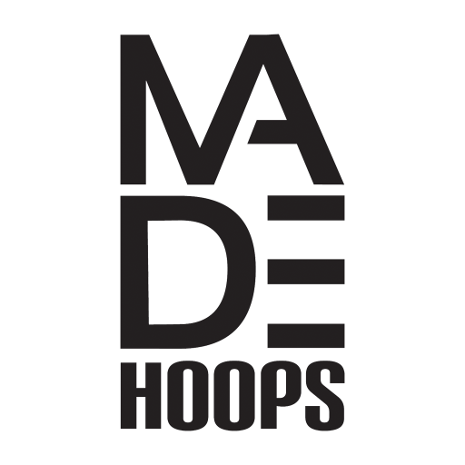

04/2026 - Present
Scouting Intern
MADE Hoop
Supporting basketball operations through database organization, player information management, and scouting support. Assisting with maintaining prospect databases, organizing evaluation notes, and helping streamline information to support staff decision-making.